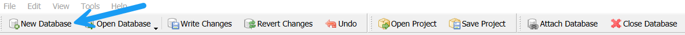
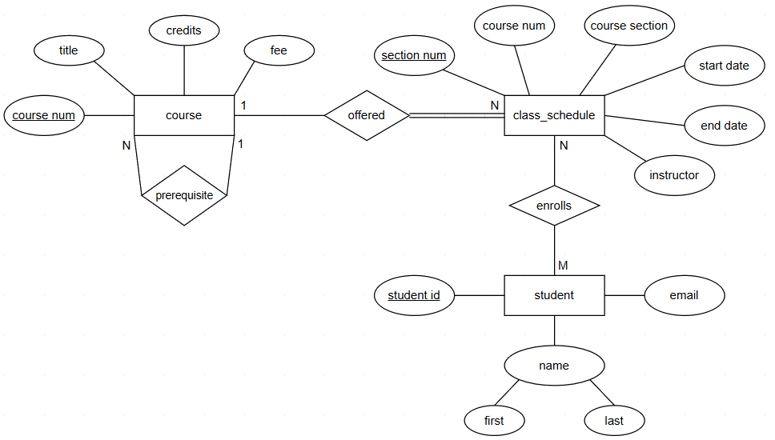
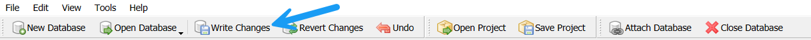
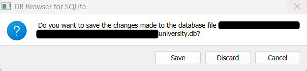

Implement Conceptual ERD
Overview
In this demo, we will get some hands-on practice with the concepts we have learned so far in the Relational Databases lecture and also learn about SQLite, the most used database engine in the world. SQLite is a lightweight relational database engine that is often used for small and/or embedded databases because it doesn't require a separate server process and is easy to integrate into applications. The entire database including all of the tables, indices, and the data itself is stored in the database file on your computer. SQLite is highly portable and many desktop applications and mobile apps use it to store their data.
Important SQLite Considerations
When working with SQLite, be aware of the following important differences from larger relational database systems:
-
Type Affinity (Not Strict Typing)
SQLite uses type affinity, which means columns have a recommended type but do not strictly enforce it. For example, inserting a string into a column declared asINTwill not cause an error. This can lead to inconsistent data if not carefully managed. -
Foreign Keys Are Not Enforced by Default
Unlike other databases, SQLite does NOT enforce foreign key constraints unless explicitly enabled. To ensure referential integrity, you must run:
PRAGMA foreign_keys = ON;
SQL Autograder Warmup
This demo will also be used as warmup exercise to get comfortable with the autograder format requirements that will be utilized for all SQL programming assignments for this course. CP0_Autograder_Warmup is worth 5 bonus points that will count towards the 100 participation points for the class. All queries required for `CP0_Autograder_Warmup will be provided in this resource since the primary objective is to gain familiarity with the .yaml file formatting for Gradescope submissions. These queries also provide the foundation necessary to complete CP1_Create_Database and HW2_Create_Database since the SQL concepts utilized have not been covered in class yet.
Note
Participation points are intended to encourage hands-on learning by actively engaging with the demonstrations during class. This allows you to follow along and reinforce key concepts in real-time.
SQLite Type Affinities
Below is a table of the five type affinities in SQLite and how it applies to some of the data types used in other relational database systems such as MySQL. For this demo, we will explicitly utilize data types that directly align with the type affinity. Read more about data types in SQLite here.
| Affinity | Description | Applies When Declared Type Contains |
|---|---|---|
TEXT |
Stores values as text (UTF-8, UTF-16LE, or UTF-16BE). | CHAR, CLOB, TEXT |
NUMERIC |
Stores values as integers or floats when possible; also used for date/time. | NUMERIC, DECIMAL, BOOLEAN or unrecognized types |
INTEGER |
Stores values as integers. | INT |
REAL |
Stores values as 8-byte floating-point numbers. | REAL, FLOAT, DOUBLE |
BLOB |
No type conversion; values stored exactly as input. | Type is exactly BLOB or completely unrecognized |
Note
Data types are not evaluated in the grader for CP0_Autograder_Warmup but will be a requirement in CP1_Create_Database and HW2_Create_Database.
Some Thoughts on Naming Conventions
If you do any amount of research on the web about best practices for table and column naming conventions, the main thing that you will discover is there does not seem to be any consistent recommendations. Should you use a snake_case, camelCase, or PascalCase naming convention? Should you use singular or plural nouns? The latter seems to be a pretty highly debated topic. Check out this Stack Overflow post where it seems almost every other answer/comment contradicts each other.
Here are two general rules to consider:
- Be consistent
- Avoid names that conflict with applicable DBMS reserved words
In line with rule #1 above, we will use snake_case throughout this course and favor singular nouns unless it just sounds weird when you say it out loud or it violates rule #2. Click here to read a little more about naming conventions.
Install DB Browser
To follow along, you will need to install DB Browser, an app used for working with SQLite database files. Click here to go to the DB Browser downloads page and follow the instructions to download and install the version for your operating system.
Create Database
In this demo, we will be creating a SQLite version of the small university database that has been referenced in the Introduction and Relational Databases lectures. Open DB Browser and click on the button "New Database".

Select a folder location on your computer and name the new database university and click Save.
Implementing Entities and Attributes
We will be converting the following conceptual ERD into a logical design for SQLite.

First, we will write the initial CREATE TABLE statements for the course, class_schedule, and student tables.
Important Implementation Requirements
- Table names are NOT considered in the autograder but typically should be implemented in lower case with
_in between words matching the ERD entity box exactly. - Attribute names MUST be converted to all lower case with
_in between words. - Attributes must accurately represent whether a column allows NULL values, based on business requirements and/or ERD specifications.
- Composite attribute requirements will be specified but typically are some combination of the child and parent names or vice versa with
_in between words.
For this simple database, there are no weak entities since each entity can be uniquely identified by its own key attributes. Therefore, the tables are pretty straight forward with only simple attributes and one key attribute for each table.
The course table has 4 attributes with course_num as the primary key.
CREATE TABLE course (
course_num integer NOT NULL,
title text NOT NULL,
credits integer NOT NULL,
fee numeric NOT NULL,
CONSTRAINT course_pk PRIMARY KEY(course_num)
);
Warning
SQLite can cache updates in memory and some tools stage edits until you commit or write changes.
In DB Browser, you use the Write Changes button to commit any pending updates to the database.

In addition, it will prompt you if you attempt to close the app or database with changes that have not been made to the database yet.

The class_schedule table has 6 attributes with section_num as the primary key.
CREATE TABLE class_schedule (
section_num integer NOT NULL,
course_num integer NOT NULL,
course_section text NOT NULL,
start_date text NOT NULL,
end_date text NOT NULL,
instructor text NOT NULL,
CONSTRAINT class_schedule_pk PRIMARY KEY(section_num)
);
student table has 4 attributes with student_id as the primary key.
CREATE TABLE student (
student_id integer NOT NULL,
first_name text NOT NULL,
last_name text NOT NULL,
email text NOT NULL,
CONSTRAINT student_pk PRIMARY KEY(student_id)
);
Implementing Relationships
1:N or N:1 Relationships
The relationship between course and class_schedule is 1:N because the same course can be offered on the class schedule multiple times. However, for each class section, it can only be offered for one course. We will add a foreign key constraint on the many side of the relationship in the CREATE TABLE class_schedule statement.
CREATE TABLE class_schedule (
section_num integer NOT NULL,
course_num integer NOT NULL,
course_section text NOT NULL,
start_date text NOT NULL,
end_date text NOT NULL,
instructor text NOT NULL,
CONSTRAINT class_schedule_pk PRIMARY KEY(section_num),
CONSTRAINT class_schedule_course_fk FOREIGN KEY (course_num) REFERENCES course(course_num)
);
ALTER TABLE and ADD CONSTRAINT statements. One advantage of this approach is that it eliminates the need to create the tables in a specific order (i.e., cannot add a foreign key restraint that references a table that does not exist yet). For example, here is an example for altering the class_schedule table and adding the same foreign key constraint.
ALTER TABLE class_schedule ADD CONSTRAINT class_schedule_course_fk FOREIGN KEY(course_num)
REFERENCES course (course_num);
Tip
SQLite does not support adding foreign key constraints with ALTER TABLE after the table has already been created as you can in other databases like MySQL or PostgreSQL.
Recursive Relationships
In addition, the recursive relationship between course is 1:N because a course can only have 1 prerequisite course but that course can be a prerequisite for multiple courses. As noted by the partial participation line on the 1 side of the relationship, all courses do not have a prerequisite so this indicates this column must allow NULL values. The total participation line on the N side confirms the course must exist in order to be a prerequisite.
Let's go back and add the additional prereq_course_num column and the self-referencing foreign key.
CREATE TABLE course (
course_num integer NOT NULL,
title text NOT NULL,
credits integer NOT NULL,
fee numeric NOT NULL,
prereq_course_num integer NULL,
CONSTRAINT course_pk PRIMARY KEY(course_num),
CONSTRAINT prereq_course_fk FOREIGN KEY (prereq_course_num) REFERENCES course(course_num)
);
Note
In real-world situations, the recursive relationship between course most likely would be M:N since a course could have multiple prerequisites but was limited to 1 to illustrate the concepts on how this type of relationship would be implemented in the same table.
M:N Relationships
We have one M:N relationship since each class section can have many students enrolled and each student can enroll in multiple classes. We will need a new bridge table that contains two foreign keys, referring to the primary keys of the related tables. For the university ERD, we do not have any attributes connected to the enrolls relationship so the new bridge table will only have columns for the respective primary keys of the related tables.
There is no standard convention for bridge table names but class_schedule_student just doesn't sound natural so we will go with the name enrollment here since the purpose of the table is to track all students enrollment in classes.
CREATE TABLE enrollment (
student_id integer NOT NULL,
section_num integer NOT NULL,
CONSTRAINT enrollment_pk PRIMARY KEY (student_id, section_num),
CONSTRAINT enrollment_student_fk FOREIGN KEY (student_id) REFERENCES student(student_id),
CONSTRAINT enrollment_course_fk FOREIGN KEY (section_num) REFERENCES class_schedule(section_num)
);
Submission Formatting
We are now ready to take each of our SQL statements and paste into the submission.yaml for grading. For SQL query assignments, this will be pretty straight forward where you will simply paste your query in the submission.yaml file for the respective question. However, database creation assignments require some special queries but these will be provided and you will focus on writing the SQL to create all relevant tables for the database with appropriate data types, foreign keys, primary keys, and other constraints.
Strong Entity Tables
First, let's discuss the required SQL that is utilized by the autograder for validating the structure of tables implemented for strong entities. SQLite has a pragma_table_info('table_name') function that returns a result set (similar to a table), which contains information about the columns of a specified table. This result set includes one row for each column in the table and contains the following columns:
cid: The column ID (an integer index, starting from 0).name: The name of the column.type: The data type of the column.notnull: An integer indicating whether the column has a NOT NULL constraint (1 for true, 0 for false).dflt_value: The default value for the column, or NULL if no default value is specified.pk: An integer indicating whether the column is part of the primary key (1 for true, 0 for false).
For this warmup exercise, we will only be using 3 out of 6 columns in the result to validate column names, binary indicator for the primary key(s), and binary indicator if the column allows NULL values.
Tip
This is why column names, correct primary keys and the NULL/NOT NULL constraint are important!
Example usage:
SELECT
name,
pk,
"notnull"
FROM pragma_table_info('course')
ORDER BY
name;
Note
You may wonder why notnull is enclosed in double quotes (""). In SQL, NOTNULL is a reserved keyword, and without the quotes, the query will result in an error. You can safely enclose every column in double quotes if you would like.
Here is the full code for question 1 to create the course table.
- question: 1
answer: |
CREATE TABLE course (
course_num integer NOT NULL,
title text NOT NULL,
credits integer NOT NULL,
fee numeric NOT NULL,
prereq_course_num integer NULL,
CONSTRAINT course_pk PRIMARY KEY(course_num),
CONSTRAINT prereq_course_fk FOREIGN KEY (prereq_course_num) REFERENCES course(course_num)
);
SELECT
name,
pk,
"notnull"
FROM pragma_table_info('course')
ORDER BY
name;
Important SQL Formatting Requirement
- Each query MUST have a
;in between each statement for each question in yoursubmission.yamlfile. Pay close attention to theORDER BYrequirements since the row order must match exactly!
Let's now add in the queries for the class_schedule and student tables. You will notice the formatting is similar with the CREATE TABLE statement followed by the pragma_table_info() query.
- question: 2
answer: |
CREATE TABLE class_schedule (
section_num integer NOT NULL,
course_num integer NOT NULL,
course_section text NOT NULL,
start_date text NOT NULL,
end_date text NOT NULL,
instructor text NOT NULL,
CONSTRAINT class_schedule_pk PRIMARY KEY(section_num),
CONSTRAINT class_schedule_course_fk FOREIGN KEY (course_num) REFERENCES course(course_num)
);
SELECT
name,
pk,
"notnull"
FROM pragma_table_info('class_schedule')
ORDER BY
name;
- question: 3
answer: |
CREATE TABLE student (
student_id integer NOT NULL,
first_name text NOT NULL,
last_name text NOT NULL,
email text NOT NULL,
CONSTRAINT student_pk PRIMARY KEY(student_id)
);
SELECT
name,
pk,
"notnull"
FROM pragma_table_info('student')
ORDER BY
name;
Weak Entity/Bridge Tables
The implementation of weak entities and/or bridge tables to decompose M:N relationships require critical thinking and the structure of the submission.yaml file could provide many clues on the correct logical design. Therefore, all other tables in the database will be graded in a single question with the output based on a custom database view in the Autograder.
For the university database, we only have the one bridge table for the student to class_schedule M:N relationship so we will add that CREATE TABLE statement above the query that will validate all tables.
- question: 4
answer: |
CREATE TABLE enrollment (
student_id integer NOT NULL,
section_num integer NOT NULL,
CONSTRAINT enrollment_pk PRIMARY KEY (student_id, section_num),
CONSTRAINT enrollment_student_fk FOREIGN KEY (student_id) REFERENCES student(student_id),
CONSTRAINT enrollment_course_fk FOREIGN KEY (section_num) REFERENCES class_schedule(section_num)
);
SELECT
column_name,
is_pk,
pk_has_fk,
table_cnt,
fk_reference_cnt
FROM vw_composite_table_summary
ORDER BY
column_name
Foreign Keys
All foreign keys will be automatically evaluated and you only need to ensure that all tables in the prior questions have the proper foreign key design.
- question: 5
answer: |
SELECT
fk_column,
ref_column,
table_cnt,
ref_table_cnt
FROM vw_foreign_key_summary
ORDER BY
fk_column,
ref_column;
Important Formatting Requirements
- The
SELECTstatement that uses thevw_composite_column_summaryandvw_foreign_key_column_summarywill be provided in all startersubmission.yamlfiles and shouldNOTbe changed.
Autograder Submission
We are now ready to submit our submission.yaml file on Gradescope for grading of CP0_Autograder_Warmup.
Conclusion
In this demo, we analyzed the university entity-relationship diagram (ERD) and followed all implementation steps to convert our conceptual data model to a logical database design.